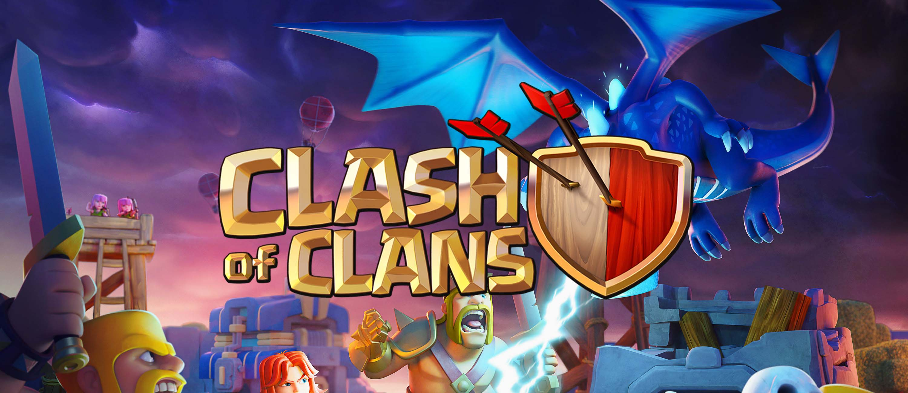
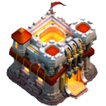
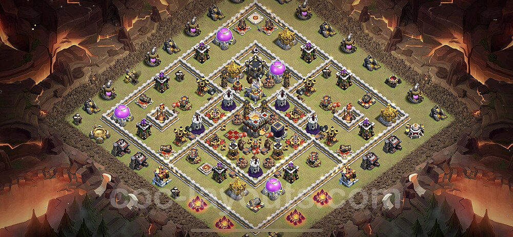
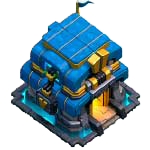
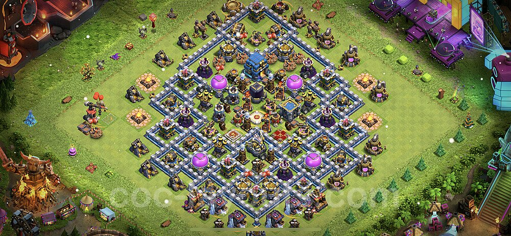
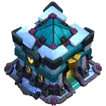
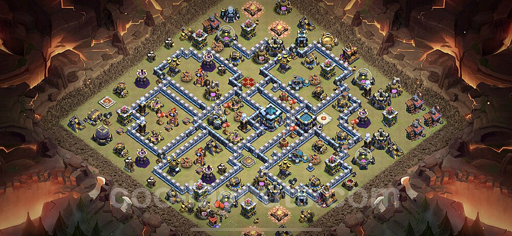
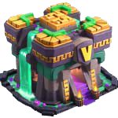
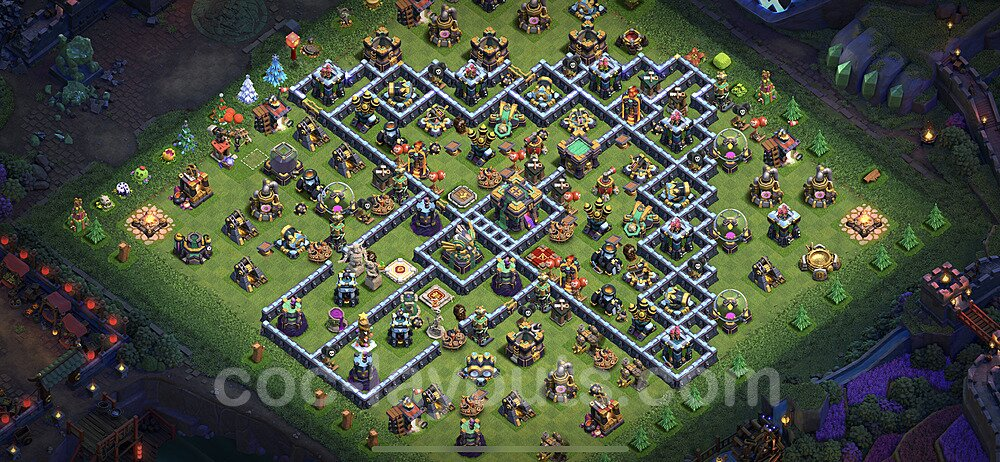

|  | |
|---|---|
|
Clash of Clans Download Home Page Official Youtube Channel Clash of Clans Support 
Th 11: At eleventh level the Town Hall’s base changes to rough stone. The entrance becomes golden and a gate consisting of three huge spikes supported by a system which is added above it. The roof becomes white and gains a large, lava filled hole. Two small battlements with red flooring appear on the front of the roof, and a single watchtower remains on the back. Th 12: Town Hall level 12 is the only Town Hall to sport one of these Giga Teslas. A level 1 Giga Tesla is already built-in with the Town Hall when the Town Hall level 12 upgrade is completed. The Giga Tesla deals very high damage per second to multiple targets at once. Th 13: At level 13 the Town Hall gets a really bright turquoise and blue color scheme, unlike normal inferno, towers the Giga Inferno is turquoise and blue like the town hall the base of the town hall depends on the Giga Inferno's level. Th 14: Town Hall 14 will still have a Giga Inferno that can be upgraded 5 levels. However, when the Town Hall is destroyed, it'll now drop a Poison Bomb that deals damage, slows enemy attacks and movement speed. |
About Clash of Clans: Clash of Clans is an online multiplayer game in which players form communities called clans, train troops, and attack other players to earn resources. There are four currencies or resources in the game. Gold and elixir can be used to build and upgrade defenses and traps that protect the player's village from other players' attacks and to build and upgrade buildings. Elixir and dark elixir are also used to train and upgrade troops and spells. Gems are the premium currency. Attacks are rated on a three-star scale and have a maximum timed length of three minutes. The game also features a pseudo-single-player campaign in which the player can attack a series of fortified goblin villages and earn gold, elixir (and dark elixir in higher levels). To perform an upgrade, a free builder is needed. The game starts with two builders, but the player can have up to five builders through buying them with gems and even a sixth by getting and unlocking the OTTO Hut in Builder Base 9. App Preview: Base Links: Here are some of the Best Trophy, Farming and Hybrid Bases that you can use to defend your village from invaders. From town hall 11 to Townhall 14, the most common townhall levels in the game.  Town Hall 11 Base link : Base Link 1   Town Hall 12 Base link : Base Link 2  Town Hall 13 Base link : Base Link 3  Town Hall 14 Base link : Base Link 4 |
Developed By : Angelo Gabriel A. Ladines |
|